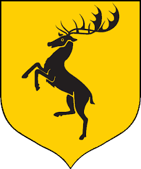
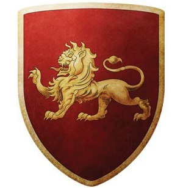
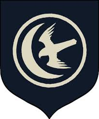

The Seven Kingdoms is a realm located on the continent of Westeros, ruled by the Lord of the Seven Kingdoms, the king who sits on the Iron Throne in the capital city, King's Landing. The name derives from the situation three centuries ago when Aegon the Conqueror set to unite the lands of Westeros, which then contained seven independent realms. The new realm created from Aegon's Conquest contains nine distinct regions or provinces.
Is a Great House of Westeros, ruiling over the vast region knows as the the North from their seat in Winterfell.
It is one of the oldest lines of Westeros nobility by far, claiming a life of decent streching back over eight thousand years. Before the targaryen conquest, as well as during the War of the Five Kings and Daenerys Targaryen's invasion of Westeros, the leaders of House Stark ruled over the region as the Kings in the North.
Their rule in the North seemingly ended after the events of the Red Wedding when House Frey and House Bolton betrayed House Stark after forming a secret alliance with House Lannister, during which Roose Bolton murdered King Robb Stark. Both the North and Winterfell were taken over by House Bolton. However, the Bolton's hold was jeopardized when Sansa Stark escaped their clutches after learning her brothers Bran and Rickon Stark were still alive and reunited with her half-brother Jon Snow at Castle Black. Sansa and Jon marched on the Boltons to save their younger brother Rickon, who was later murdered by Ramsay Bolton, and retake their family home Winterfell. House Stark was restored to their former stature after the Battle of the Bastards. The Stark victory led to House Stark's return to royal status in the North with their bannermen declaring Ned Stark's illegitimate son Jon Snow as the King in the North. He later abdicated his title as king in order to gain the full support of Daenerys Targaryen in the Great War, becoming the Warden of the North.
House Lannister of Casterly Rock is one of the Great Houses of Westeros, one of its richest and most powerful families and oldest dynasties. It is also the current royal house of the Seven Kingdoms following the extinction of House Baratheon of King's Landing, which had been their puppet house anyway.
The Lannisters rule over the Westerlands. Their seat is Casterly Rock, a massive rocky promontory overlooking the Sunset Sea which has had habitations and fortifications built into it over the millennia. They are the Lords Paramount of the Westerlands and Wardens of the West. As the new royal house, they also rule directly over the Crownlands from their seat of the Red Keep in King's Landing, the traditional seat of the royal family. House Lannister's Heraldry consists of a golden lion on a crimson background, and their House words are "Hear me roar!", which is rarely mentioned. Their unofficial motto, which is as well known as the official one, is "A Lannister always pays his debts" - which is used much more often and mostly in negative context, though it can also be used in the original, literal sense.
The incestuous relationship of Cersei and Jaime has been concealed in a conspiracy. Their son Joffrey Baratheon has claimed the Iron Throne on the premise that he was actually fathered by the late King Robert Baratheon. Lord Tywin was a key supporter of his reign in the War of the Five Kings.

House Baratheon is the principle house of the Stormlands and is the youngest of the noble houses. King Robert is head of the house, though he lives in King’s Landing. The official seat of the house is in Storm’s End, and the youngest of the Baratheon brothers, Renly, is Lord of Storm’s End. The middle Baratheon brother, Stannis, is Lord of Dragonstone, which is a secondary seat for the house. House Baratheon’s coat of arms is a black stag on a bright yellow background, and its motto is “Ours Is the Fury.”

Originally from Valyria on the continent of Essos, House Targaryen conquered the Seven Kingdoms of Westeros and ruled for 300 years through the use of dragons. Its coat of arms is a red three-headed dragon on black, and its motto is “Fire and Blood.” The rule of the Targaryens ended when Robert Baratheon and Ned Stark led a rebellion to depose King Aerys, during which the king was slain by Jaime Lannister. Afterward, Robert took the Iron Throne, and Aerys’s surviving two children (Daenerys and Viserys) were exiled to Essos.
House Arryn is the principle house in the Vale and is seated in a small castle called the Eyrie, which is located at the top of a mountain. Jon Arryn, the head of the house, served King Robert as Hand of the King; Jon was poisoned shortly before Game of Thrones begins, which prompts Robert to ask Ned Stark to become Hand of the King. Now, Jon’s only son Robert is Lord of the Eyrie, with his mother Lysa acting as regent. House Arryn’s coat of arms is white moon and falcon on blue, and its motto is “As High as Honor.”
Seated in Pyke in the Iron Islands, House Greyjoy became Lords Paramount of the Iron Islands after the Targaryens conquered Westeros. Ten years before Game of Thrones begins, Lord Balon Greyjoy led a failed rebellion against King Robert, after which Lord Balon had to give his youngest son, Theon, to the Starks as a hostage to live in Winterfell in order to retain control of the Iron Islands. House Greyjoy’s coat of arms is a golden kraken on black, and its motto is “We Do Not Sow.”

Seated at Sunspear Castle in Dorne, House Martell resisted conquest by the Targaryens and was allowed to remain sovereign; in fact, Dorne was the only kingdom that maintained its independence during the Targaryen conquest. House Martell supported the Targaryens during Robert Baratheon’s rebellion, but ended up swearing fealty to Robert after he took the Iron Throne. House Martell isolated itself from the other houses because of their anger and resentment of the Lannisters. Its coat of arms is a gold spear piercing a red sun on a gold background, and its motto is “Unbowed, Unbent, Unbroken.”
House Tyrell is the principle house in the Reach and is seated in Highgarden. The Targaryens made the Tyrells Lords of Highgarden after the king of the Reach was killed. The women of House Tyrell are known to be clever leaders, which is apparent in Margaery Tyrell’s rise to become Renly Baratheon’s wife, then betrothed to Joffrey after Renly’s death. House Tyrell’s coat of arms is a golden rose on a green background, and its motto is “Growing Strong.”
House Tully is seated at Riverrun in the Riverlands. Catelyn Stark and Lysa Arryn are the daughters of Hoster Tully, the Lord of Riverrun. House Tully’s coat of arms is a silver trout on blue and red stripes, and its motto is “Family, Duty, Honor.”